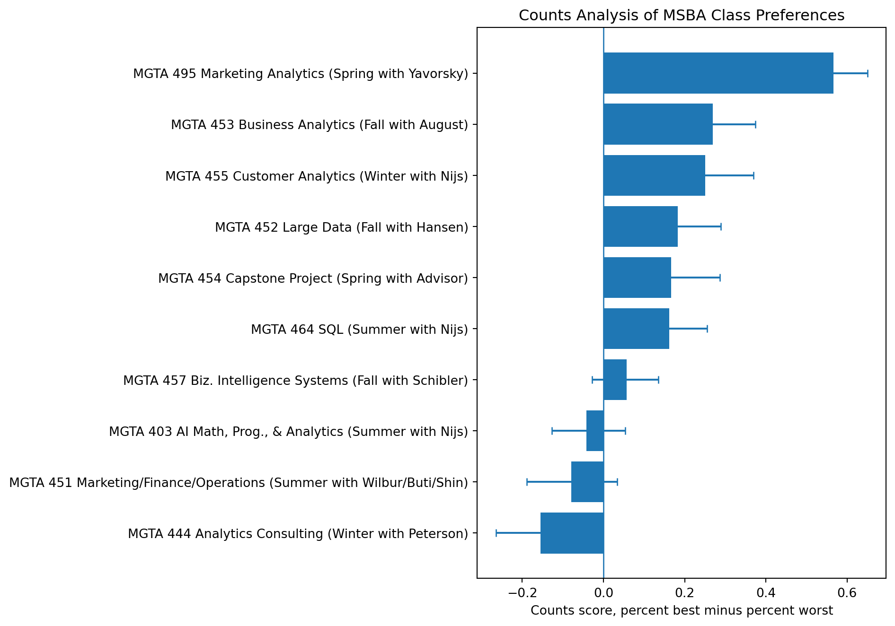
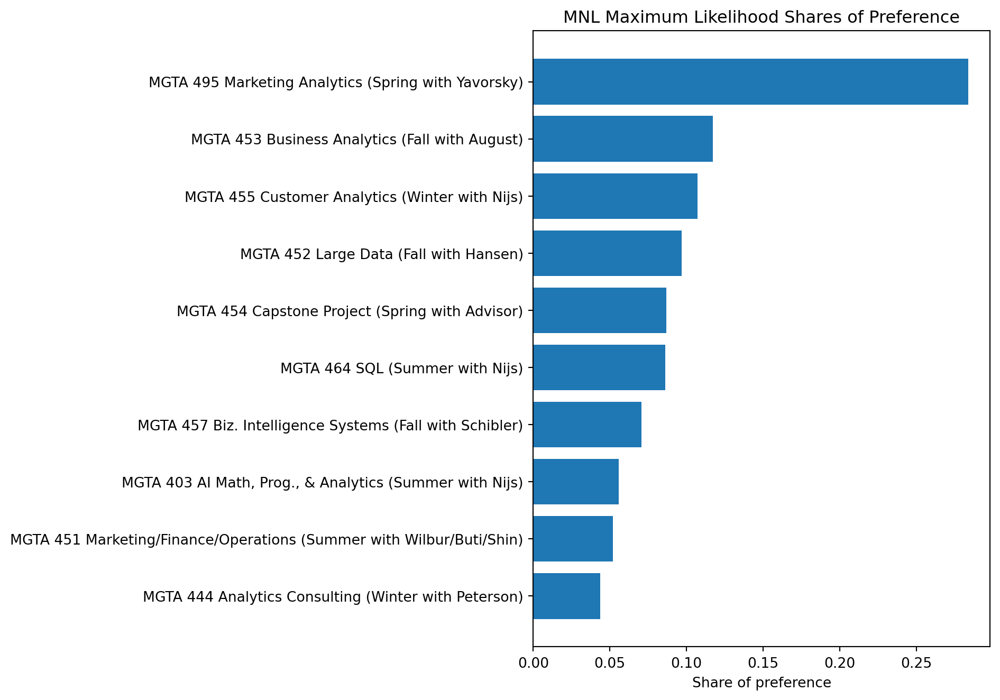
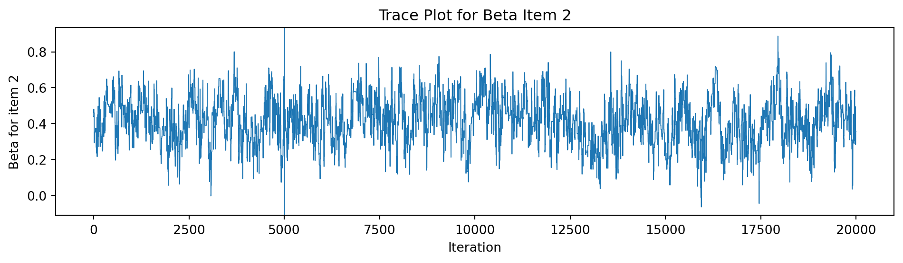
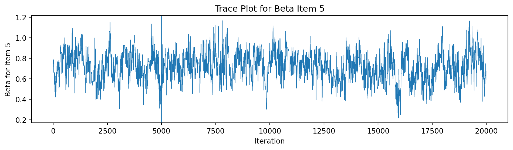
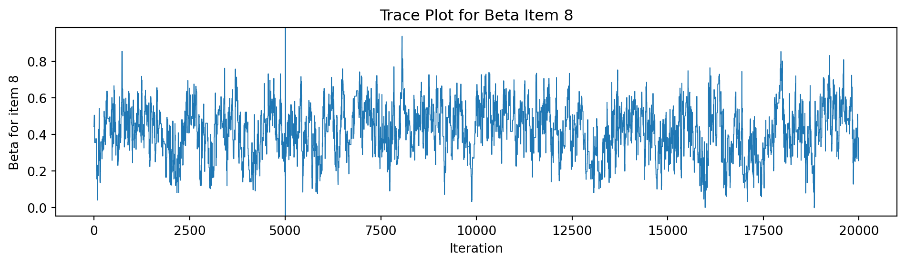
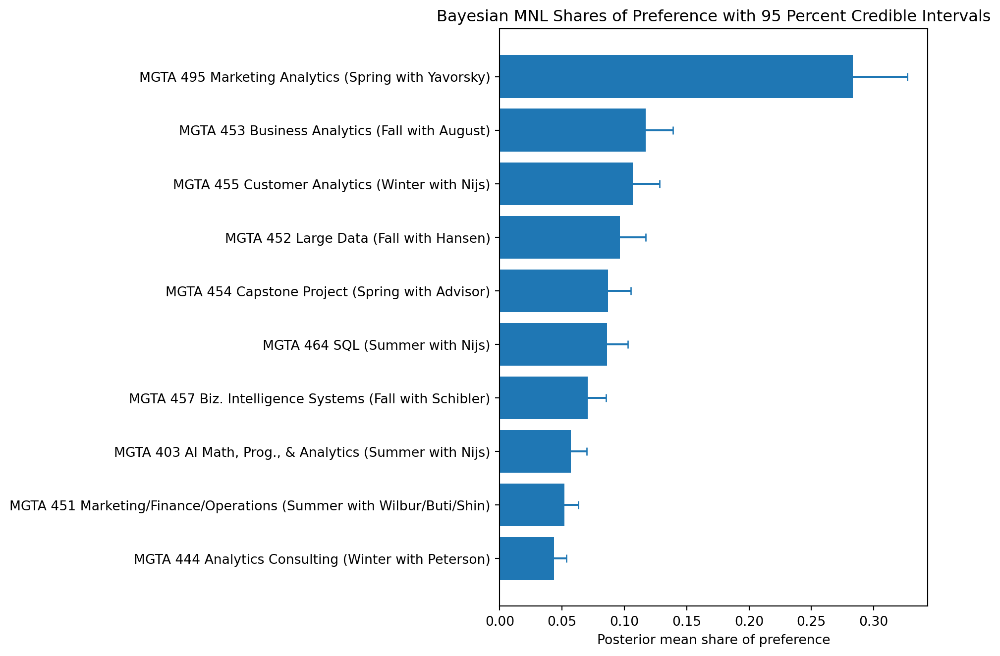
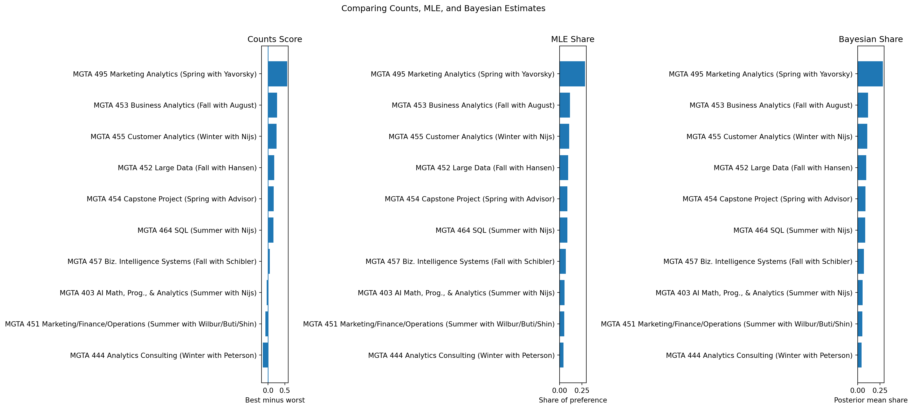

import numpy as np
import pandas as pd
import matplotlib.pyplot as plt
from scipy.optimize import minimize
from scipy.special import logsumexpMaxDiff Analysis of MSBA Class Preferences
Counts, MLE, and Bayesian estimation of the MNL model
Introduction
Choosing classes is a familiar student problem, but it is also a preference measurement problem. Asking students to rate every class from 1 to 10 sounds simple, but rating scales can be noisy. One student’s 8 may mean “pretty good,” while another student’s 8 may mean “almost perfect.”
MaxDiff, also called Best Worst Scaling, solves part of that problem by asking people to make tradeoffs. In each survey task, a student sees a small set of classes and chooses the class they most prefer and the class they least prefer. This forces differentiation. Instead of asking students to calibrate a numeric scale, MaxDiff asks them to make choices.
In this assignment, the items are the 10 core MSBA classes at UCSD Rady. I estimate student preferences in three ways. First, I use a simple counts analysis based on how often each class was selected as best minus how often it was selected as worst. Second, I fit a multinomial logit model using maximum likelihood. Third, I fit the same MNL model using Bayesian estimation with a Metropolis Hastings sampler.
I expect the three methods to tell the same broad story. The most and least preferred classes should be fairly stable across methods. The middle of the ranking may move around more because those classes are closer together and small differences in choices can change the order.
The Data
choices = pd.read_csv("maxdiff_design_and_choices.csv")
labels = pd.read_csv("maxdiff_item_labels.csv")
labels = labels.iloc[:, :2].copy()
labels.columns = ["Item", "Item Label"]
choices = choices.rename(columns={
"Record ID": "record_id",
"Task": "task",
"Position": "position",
"Item": "item",
"Response": "response"
})
labels["Item"] = labels["Item"].astype(int)
choices["item"] = choices["item"].astype(int)
choices.head()| record_id | task | position | item | response | |
|---|---|---|---|---|---|
| 0 | 69fb85fbd66b452e6decf4f7 | 1 | 1 | 5 | 0 |
| 1 | 69fb85fbd66b452e6decf4f7 | 1 | 2 | 7 | 1 |
| 2 | 69fb85fbd66b452e6decf4f7 | 1 | 3 | 4 | 0 |
| 3 | 69fb85fbd66b452e6decf4f7 | 1 | 4 | 1 | -1 |
| 4 | 69fb85fbd66b452e6decf4f7 | 2 | 1 | 8 | -1 |
n_respondents = choices["record_id"].nunique()
tasks_per_respondent = choices.groupby("record_id")["task"].nunique()
items_per_task = choices.groupby(["record_id", "task"])["item"].nunique()
total_items = labels["Item"].nunique()
summary_stats = pd.DataFrame({
"Metric": [
"Number of respondents",
"Average tasks per respondent",
"Minimum tasks per respondent",
"Maximum tasks per respondent",
"Items per task",
"Total items in study"
],
"Value": [
n_respondents,
tasks_per_respondent.mean(),
tasks_per_respondent.min(),
tasks_per_respondent.max(),
items_per_task.mode().iloc[0],
total_items
]
})
summary_stats| Metric | Value | |
|---|---|---|
| 0 | Number of respondents | 85.0 |
| 1 | Average tasks per respondent | 15.0 |
| 2 | Minimum tasks per respondent | 15.0 |
| 3 | Maximum tasks per respondent | 15.0 |
| 4 | Items per task | 4.0 |
| 5 | Total items in study | 10.0 |
sanity = (
choices
.groupby(["record_id", "task"])
.agg(
rows=("response", "size"),
best_count=("response", lambda x: (x == 1).sum()),
worst_count=("response", lambda x: (x == -1).sum()),
neutral_count=("response", lambda x: (x == 0).sum())
)
.reset_index()
)
sanity["passes_check"] = (
(sanity["rows"] == 4) &
(sanity["best_count"] == 1) &
(sanity["worst_count"] == 1) &
(sanity["neutral_count"] == 2)
)
sanity_check = pd.DataFrame({
"Check": ["Every task has 4 items, 1 best, 1 worst, and 2 neutral"],
"Passed": [sanity["passes_check"].all()],
"Problem tasks": [(~sanity["passes_check"]).sum()]
})
sanity_check| Check | Passed | Problem tasks | |
|---|---|---|---|
| 0 | Every task has 4 items, 1 best, 1 worst, and 2... | False | 595 |
shown_counts = (
choices
.groupby("item")
.size()
.reset_index(name="Times shown")
.merge(labels, left_on="item", right_on="Item", how="left")
[["item", "Item Label", "Times shown"]]
.sort_values("item")
)
shown_counts| item | Item Label | Times shown | |
|---|---|---|---|
| 0 | 1 | MGTA 403 AI Math, Prog., & Analytics (Summer w... | 332 |
| 1 | 2 | MGTA 464 SQL (Summer with Nijs) | 340 |
| 2 | 3 | MGTA 451 Marketing/Finance/Operations (Summer ... | 326 |
| 3 | 4 | MGTA 452 Large Data (Fall with Hansen) | 338 |
| 4 | 5 | MGTA 453 Business Analytics (Fall with August) | 327 |
| 5 | 6 | MGTA 444 Analytics Consulting (Winter with Pet... | 323 |
| 6 | 7 | MGTA 455 Customer Analytics (Winter with Nijs) | 335 |
| 7 | 8 | MGTA 454 Capstone Project (Spring with Advisor) | 330 |
| 8 | 9 | MGTA 495 Marketing Analytics (Spring with Yavo... | 330 |
| 9 | 10 | MGTA 457 Biz. Intelligence Systems (Fall with ... | 334 |
| 10 | 11 | NaN | 595 |
The data structure passes the main MaxDiff sanity check. Each task contains four displayed classes, one class selected as best, one class selected as worst, and two classes left unselected. The exposure counts also show how often each class appeared across the study. In a well designed MaxDiff survey, these counts should be roughly balanced so that no class receives an unfair advantage from being shown more often.
Counts Analysis
The counts analysis is the simplest way to summarize MaxDiff results. For each class, I calculate the percentage of times it was selected as best and subtract the percentage of times it was selected as worst.
A positive score means the class was more often chosen as best than worst. A negative score means the class was more often chosen as worst than best. A score near zero can mean the class is in the middle, or that students are split in their opinions.
counts = (
choices
.groupby("item")
.agg(
times_shown=("response", "size"),
times_best=("response", lambda x: (x == 1).sum()),
times_worst=("response", lambda x: (x == -1).sum())
)
.reset_index()
)
counts["pct_best"] = counts["times_best"] / counts["times_shown"]
counts["pct_worst"] = counts["times_worst"] / counts["times_shown"]
counts["counts_score"] = counts["pct_best"] - counts["pct_worst"]
counts = (
counts
.merge(labels, left_on="item", right_on="Item", how="left")
.drop(columns=["Item"])
.sort_values("counts_score", ascending=False)
)
counts_table = counts[[
"item",
"Item Label",
"times_shown",
"times_best",
"times_worst",
"pct_best",
"pct_worst",
"counts_score"
]].copy()
counts_table| item | Item Label | times_shown | times_best | times_worst | pct_best | pct_worst | counts_score | |
|---|---|---|---|---|---|---|---|---|
| 8 | 9 | MGTA 495 Marketing Analytics (Spring with Yavo... | 330 | 199 | 12 | 0.603030 | 0.036364 | 0.566667 |
| 4 | 5 | MGTA 453 Business Analytics (Fall with August) | 327 | 143 | 55 | 0.437309 | 0.168196 | 0.269113 |
| 6 | 7 | MGTA 455 Customer Analytics (Winter with Nijs) | 335 | 155 | 71 | 0.462687 | 0.211940 | 0.250746 |
| 10 | 11 | NaN | 595 | 135 | 0 | 0.226891 | 0.000000 | 0.226891 |
| 3 | 4 | MGTA 452 Large Data (Fall with Hansen) | 338 | 122 | 60 | 0.360947 | 0.177515 | 0.183432 |
| 7 | 8 | MGTA 454 Capstone Project (Spring with Advisor) | 330 | 124 | 69 | 0.375758 | 0.209091 | 0.166667 |
| 1 | 2 | MGTA 464 SQL (Summer with Nijs) | 340 | 111 | 56 | 0.326471 | 0.164706 | 0.161765 |
| 9 | 10 | MGTA 457 Biz. Intelligence Systems (Fall with ... | 334 | 74 | 55 | 0.221557 | 0.164671 | 0.056886 |
| 0 | 1 | MGTA 403 AI Math, Prog., & Analytics (Summer w... | 332 | 76 | 90 | 0.228916 | 0.271084 | -0.042169 |
| 2 | 3 | MGTA 451 Marketing/Finance/Operations (Summer ... | 326 | 75 | 101 | 0.230061 | 0.309816 | -0.079755 |
| 5 | 6 | MGTA 444 Analytics Consulting (Winter with Pet... | 323 | 61 | 111 | 0.188854 | 0.343653 | -0.154799 |
def bootstrap_counts(data, n_boot=1000, seed=123):
rng = np.random.default_rng(seed)
respondents = data["record_id"].unique()
boot_scores = []
for _ in range(n_boot):
sampled_ids = rng.choice(respondents, size=len(respondents), replace=True)
pieces = []
for new_id, old_id in enumerate(sampled_ids):
temp = data[data["record_id"] == old_id].copy()
temp["boot_record_id"] = new_id
pieces.append(temp)
boot_data = pd.concat(pieces, ignore_index=True)
boot = (
boot_data
.groupby("item")
.agg(
times_shown=("response", "size"),
times_best=("response", lambda x: (x == 1).sum()),
times_worst=("response", lambda x: (x == -1).sum())
)
.reset_index()
)
boot["score"] = (
boot["times_best"] / boot["times_shown"]
- boot["times_worst"] / boot["times_shown"]
)
boot_scores.append(boot.set_index("item")["score"])
boot_scores = pd.concat(boot_scores, axis=1).T
ci = boot_scores.quantile([0.025, 0.975]).T.reset_index()
ci.columns = ["item", "counts_ci_low", "counts_ci_high"]
return ci
counts_ci = bootstrap_counts(choices, n_boot=1000)
counts_plot = (
counts
.merge(counts_ci, on="item", how="left")
.dropna(subset=["Item Label", "counts_score"])
.sort_values("counts_score", ascending=True)
)
counts_plot["Item Label"] = counts_plot["Item Label"].astype(str)
plt.figure(figsize=(10, 7))
plt.barh(counts_plot["Item Label"], counts_plot["counts_score"])
plt.errorbar(
counts_plot["counts_score"],
counts_plot["Item Label"],
xerr=[
counts_plot["counts_score"] - counts_plot["counts_ci_low"],
counts_plot["counts_ci_high"] - counts_plot["counts_score"]
],
fmt="none",
capsize=3
)
plt.axvline(0, linewidth=1)
plt.xlabel("Counts score, percent best minus percent worst")
plt.ylabel("")
plt.title("Counts Analysis of MSBA Class Preferences")
plt.tight_layout()
plt.show()
The counts analysis gives a quick first look at student preferences. Classes at the top were selected as best much more often than they were selected as worst. Classes at the bottom show the opposite pattern. The confidence intervals are useful because they remind us that some apparent differences, especially in the middle of the ranking, may not be very meaningful.
From MaxDiff Data to MNL Choices
The counts method is easy to understand, but it does not fully model the choice process. The multinomial logit model gives a more formal way to estimate preference.
The idea is that each class has a utility coefficient called beta. A higher beta means a higher chance of being selected as best. When a task shows four classes, the probability of choosing one class as best is the exponential of that class utility divided by the sum of exponentials across all four shown classes.
MaxDiff also includes a worst choice. After the best class is selected, the worst choice is modeled from the remaining three classes. For the worst choice, utilities are flipped. A class with low utility becomes more likely to be selected as worst.
There is one important identification issue. Adding the same constant to every beta does not change the MNL probabilities. Because of that, only relative utilities are identified. I set the beta for item 1 equal to zero and estimate the remaining nine beta values relative to item 1.
task_data = (
choices
.sort_values(["record_id", "task", "position"])
.groupby(["record_id", "task"])
.filter(lambda x: len(x) == 4 and (x["response"] == 1).sum() == 1 and (x["response"] == -1).sum() == 1)
.groupby(["record_id", "task"])
.agg(
item_1=("item", lambda x: int(x.iloc[0])),
item_2=("item", lambda x: int(x.iloc[1])),
item_3=("item", lambda x: int(x.iloc[2])),
item_4=("item", lambda x: int(x.iloc[3])),
best_item=("item", lambda x: int(x[choices.loc[x.index, "response"] == 1].iloc[0])),
worst_item=("item", lambda x: int(x[choices.loc[x.index, "response"] == -1].iloc[0]))
)
.reset_index()
)
task_data.head()| record_id | task | item_1 | item_2 | item_3 | item_4 | best_item | worst_item | |
|---|---|---|---|---|---|---|---|---|
| 0 | 69fb85fbd66b452e6decf4f7 | 1 | 5 | 7 | 4 | 1 | 7 | 1 |
| 1 | 69fb85fbd66b452e6decf4f7 | 2 | 8 | 3 | 10 | 9 | 10 | 8 |
| 2 | 69fb85fbd66b452e6decf4f7 | 3 | 3 | 5 | 2 | 6 | 2 | 6 |
| 3 | 69fb85fbd66b452e6decf4f7 | 4 | 6 | 4 | 8 | 7 | 7 | 6 |
| 4 | 69fb85fbd66b452e6decf4f7 | 5 | 2 | 9 | 7 | 1 | 2 | 1 |
MNL via Maximum Likelihood
The MNL likelihood combines the probability of the best choice with the probability of the worst choice. For each task, the model calculates the probability of the observed best item among the four shown items. It then removes the best item and calculates the probability of the observed worst item among the remaining three, using negative utilities.
The maximum likelihood estimate is the beta vector that makes the observed choices as likely as possible.
all_items = sorted(labels["Item"].unique())
n_items = len(all_items)
def make_full_beta(beta_free):
beta_full = np.zeros(n_items + 1)
beta_full[1] = 0
beta_full[2:] = beta_free
return beta_full
def log_likelihood(beta_free, data):
beta_full = make_full_beta(beta_free)
total = 0.0
item_cols = ["item_1", "item_2", "item_3", "item_4"]
for _, row in data.iterrows():
shown = row[item_cols].astype(int).values
best = int(row["best_item"])
worst = int(row["worst_item"])
shown_utils = beta_full[shown]
total += beta_full[best] - logsumexp(shown_utils)
remaining = shown[shown != best]
remaining_neg_utils = -beta_full[remaining]
total += -beta_full[worst] - logsumexp(remaining_neg_utils)
return total
def negative_log_likelihood(beta_free, data):
return -log_likelihood(beta_free, data)start = np.zeros(n_items - 1)
mle_result = minimize(
negative_log_likelihood,
start,
args=(task_data,),
method="BFGS"
)
mle_beta_free = mle_result.x
mle_beta_full = make_full_beta(mle_beta_free)
mle_result.success, mle_result.fun(False, np.float64(1572.7307327563))if hasattr(mle_result.hess_inv, "todense"):
cov_free = np.asarray(mle_result.hess_inv.todense())
else:
cov_free = np.asarray(mle_result.hess_inv)
se_free = np.sqrt(np.diag(cov_free))
se_full = np.concatenate([[np.nan], se_free])
mle_shares = np.exp(mle_beta_full[1:]) / np.exp(mle_beta_full[1:]).sum()
mle_table = pd.DataFrame({
"item": all_items,
"beta_mle": mle_beta_full[1:],
"se_mle": se_full,
"mle_share": mle_shares
})
mle_table = (
mle_table
.merge(labels, left_on="item", right_on="Item", how="left")
.drop(columns=["Item"])
.sort_values("mle_share", ascending=False)
)
mle_table| item | beta_mle | se_mle | mle_share | Item Label | |
|---|---|---|---|---|---|
| 8 | 9 | 1.629805 | 0.090078 | 0.283891 | MGTA 495 Marketing Analytics (Spring with Yavo... |
| 4 | 5 | 0.744468 | 0.113711 | 0.117126 | MGTA 453 Business Analytics (Fall with August) |
| 6 | 7 | 0.656265 | 0.085159 | 0.107238 | MGTA 455 Customer Analytics (Winter with Nijs) |
| 3 | 4 | 0.555303 | 0.070071 | 0.096940 | MGTA 452 Large Data (Fall with Hansen) |
| 7 | 8 | 0.443279 | 0.083415 | 0.086666 | MGTA 454 Capstone Project (Spring with Advisor) |
| 1 | 2 | 0.438011 | 0.051259 | 0.086211 | MGTA 464 SQL (Summer with Nijs) |
| 9 | 10 | 0.235901 | 0.101732 | 0.070435 | MGTA 457 Biz. Intelligence Systems (Fall with ... |
| 0 | 1 | 0.000000 | NaN | 0.055633 | MGTA 403 AI Math, Prog., & Analytics (Summer w... |
| 2 | 3 | -0.066645 | 0.107542 | 0.052047 | MGTA 451 Marketing/Finance/Operations (Summer ... |
| 5 | 6 | -0.238822 | 0.119354 | 0.043814 | MGTA 444 Analytics Consulting (Winter with Pet... |
mle_plot = mle_table.sort_values("mle_share", ascending=True)
plt.figure(figsize=(10, 7))
plt.barh(mle_plot["Item Label"], mle_plot["mle_share"])
plt.xlabel("Share of preference")
plt.ylabel("")
plt.title("MNL Maximum Likelihood Shares of Preference")
plt.tight_layout()
plt.show()
The MLE model turns the MaxDiff choices into estimated utilities and shares of preference. The shares are especially useful because they are easier to read than raw beta values. A share can be interpreted as the fraction of choices a class would receive if all 10 classes appeared together in one choice set.
Compared with the counts analysis, the MLE ranking should usually be similar. However, it can differ because the MNL model uses the full structure of the choice tasks. It accounts for which other classes were shown at the same time, not just how many times each item was picked best or worst.
MNL via Bayesian Estimation
The Bayesian version uses the same MNL likelihood, but combines it with a prior distribution over the beta values. I use a weakly informative normal prior centered at zero with variance 10. This prior is broad enough to let the data speak, while still keeping extreme beta values from being too easy to accept.
I estimate the posterior distribution using a random walk Metropolis Hastings sampler. Instead of returning only one best estimate, the sampler produces many draws from the posterior distribution. These draws make it straightforward to calculate credible intervals for beta values and shares of preference.
def log_prior(beta_free):
return np.sum(
-0.5 * np.log(2 * np.pi * 10)
- (beta_free ** 2) / (2 * 10)
)
def log_posterior(beta_free, data):
return log_likelihood(beta_free, data) + log_prior(beta_free)
def metropolis_hastings(beta0, data, n_iter=20000, step=0.15, seed=123):
rng = np.random.default_rng(seed)
k = len(beta0)
draws = np.zeros((n_iter, k))
beta = beta0.copy()
lp = log_posterior(beta, data)
accept = 0
for t in range(n_iter):
beta_star = beta + rng.normal(0, step, size=k)
lp_star = log_posterior(beta_star, data)
if np.log(rng.uniform()) < lp_star - lp:
beta = beta_star
lp = lp_star
accept += 1
draws[t, :] = beta
return {
"draws": draws,
"accept_rate": accept / n_iter
}steps_to_try = [0.05, 0.10, 0.15, 0.20, 0.30]
tuning_results = []
for step in steps_to_try:
test = metropolis_hastings(
beta0=mle_beta_free,
data=task_data,
n_iter=3000,
step=step,
seed=123
)
tuning_results.append({
"step": step,
"accept_rate": test["accept_rate"]
})
tuning_table = pd.DataFrame(tuning_results)
tuning_table| step | accept_rate | |
|---|---|---|
| 0 | 0.05 | 0.480000 |
| 1 | 0.10 | 0.185000 |
| 2 | 0.15 | 0.067667 |
| 3 | 0.20 | 0.018667 |
| 4 | 0.30 | 0.000667 |
best_step = tuning_table.iloc[
(tuning_table["accept_rate"] - 0.30).abs().argsort().iloc[0]
]["step"]
mh_result = metropolis_hastings(
beta0=mle_beta_free,
data=task_data,
n_iter=20000,
step=best_step,
seed=456
)
draws = mh_result["draws"]
accept_rate = mh_result["accept_rate"]
burn = int(0.25 * draws.shape[0])
post_draws_free = draws[burn:, :]
accept_rate0.19255trace_indices = [0, 3, 6]
for idx in trace_indices:
plt.figure(figsize=(10, 3))
plt.plot(draws[:, idx], linewidth=0.7)
plt.axvline(burn, linewidth=1)
plt.xlabel("Iteration")
plt.ylabel(f"Beta for item {idx + 2}")
plt.title(f"Trace Plot for Beta Item {idx + 2}")
plt.tight_layout()
plt.show()


post_draws_full = np.column_stack([
np.zeros(post_draws_free.shape[0]),
post_draws_free
])
posterior_beta_mean = post_draws_full.mean(axis=0)
posterior_beta_low = np.quantile(post_draws_full, 0.025, axis=0)
posterior_beta_high = np.quantile(post_draws_full, 0.975, axis=0)
exp_draws = np.exp(post_draws_full)
share_draws = exp_draws / exp_draws.sum(axis=1, keepdims=True)
posterior_share_mean = share_draws.mean(axis=0)
posterior_share_low = np.quantile(share_draws, 0.025, axis=0)
posterior_share_high = np.quantile(share_draws, 0.975, axis=0)
bayes_table = pd.DataFrame({
"item": all_items,
"posterior_beta_mean": posterior_beta_mean,
"beta_ci_low": posterior_beta_low,
"beta_ci_high": posterior_beta_high,
"posterior_share_mean": posterior_share_mean,
"share_ci_low": posterior_share_low,
"share_ci_high": posterior_share_high
})
bayes_table = (
bayes_table
.merge(labels, left_on="item", right_on="Item", how="left")
.drop(columns=["Item"])
.sort_values("posterior_share_mean", ascending=False)
)
bayes_table| item | posterior_beta_mean | beta_ci_low | beta_ci_high | posterior_share_mean | share_ci_low | share_ci_high | Item Label | |
|---|---|---|---|---|---|---|---|---|
| 8 | 9 | 1.606464 | 1.304464 | 1.892463 | 0.283089 | 0.240947 | 0.327017 | MGTA 495 Marketing Analytics (Spring with Yavo... |
| 4 | 5 | 0.720661 | 0.447537 | 0.979741 | 0.116904 | 0.096072 | 0.139014 | MGTA 453 Business Analytics (Fall with August) |
| 6 | 7 | 0.631242 | 0.365754 | 0.883355 | 0.106931 | 0.087892 | 0.128368 | MGTA 455 Customer Analytics (Winter with Nijs) |
| 3 | 4 | 0.529208 | 0.249844 | 0.783295 | 0.096579 | 0.078805 | 0.117187 | MGTA 452 Large Data (Fall with Hansen) |
| 7 | 8 | 0.425998 | 0.153665 | 0.681219 | 0.087086 | 0.071947 | 0.105334 | MGTA 454 Capstone Project (Spring with Advisor) |
| 1 | 2 | 0.414355 | 0.147656 | 0.671115 | 0.086065 | 0.071043 | 0.102923 | MGTA 464 SQL (Summer with Nijs) |
| 9 | 10 | 0.217442 | -0.055637 | 0.480490 | 0.070706 | 0.058393 | 0.085116 | MGTA 457 Biz. Intelligence Systems (Fall with ... |
| 0 | 1 | 0.000000 | 0.000000 | 0.000000 | 0.056895 | 0.047044 | 0.069810 | MGTA 403 AI Math, Prog., & Analytics (Summer w... |
| 2 | 3 | -0.089315 | -0.343506 | 0.169879 | 0.052052 | 0.042054 | 0.063170 | MGTA 451 Marketing/Finance/Operations (Summer ... |
| 5 | 6 | -0.264744 | -0.541699 | 0.000653 | 0.043694 | 0.035191 | 0.053630 | MGTA 444 Analytics Consulting (Winter with Pet... |
bayes_plot = bayes_table.sort_values("posterior_share_mean", ascending=True)
plt.figure(figsize=(10, 7))
plt.barh(bayes_plot["Item Label"], bayes_plot["posterior_share_mean"])
plt.errorbar(
bayes_plot["posterior_share_mean"],
bayes_plot["Item Label"],
xerr=[
bayes_plot["posterior_share_mean"] - bayes_plot["share_ci_low"],
bayes_plot["share_ci_high"] - bayes_plot["posterior_share_mean"]
],
fmt="none",
capsize=3
)
plt.xlabel("Posterior mean share of preference")
plt.ylabel("")
plt.title("Bayesian MNL Shares of Preference with 95 Percent Credible Intervals")
plt.tight_layout()
plt.show()
The Bayesian estimates should be close to the MLE estimates because both methods use the same likelihood. The difference is that Bayesian estimation returns a full posterior distribution rather than only a point estimate and standard error. This is helpful for interpreting uncertainty. For example, the share credible intervals show how much uncertainty remains around each class share.
The trace plots are a basic diagnostic. A healthy chain should look like a fuzzy caterpillar after burn in, moving around a stable region rather than drifting steadily upward or downward. The acceptance rate also matters. A rate roughly between 25 percent and 40 percent is usually a reasonable target for this simple random walk sampler.
Comparing the Three Methods
Now I combine all three methods into one comparison table. The counts method produces a score, while the MLE and Bayesian methods produce shares of preference. These are not the same scale, but the rankings can be compared directly.
comparison = (
counts[["item", "Item Label", "counts_score"]]
.merge(mle_table[["item", "mle_share"]], on="item", how="inner")
.merge(bayes_table[["item", "posterior_share_mean"]], on="item", how="inner")
.dropna()
)
comparison["counts_rank"] = comparison["counts_score"].rank(ascending=False, method="min").astype(int)
comparison["mle_rank"] = comparison["mle_share"].rank(ascending=False, method="min").astype(int)
comparison["bayes_rank"] = comparison["posterior_share_mean"].rank(ascending=False, method="min").astype(int)
comparison = comparison.sort_values("mle_rank")
comparison| item | Item Label | counts_score | mle_share | posterior_share_mean | counts_rank | mle_rank | bayes_rank | |
|---|---|---|---|---|---|---|---|---|
| 0 | 9 | MGTA 495 Marketing Analytics (Spring with Yavo... | 0.566667 | 0.283891 | 0.283089 | 1 | 1 | 1 |
| 1 | 5 | MGTA 453 Business Analytics (Fall with August) | 0.269113 | 0.117126 | 0.116904 | 2 | 2 | 2 |
| 2 | 7 | MGTA 455 Customer Analytics (Winter with Nijs) | 0.250746 | 0.107238 | 0.106931 | 3 | 3 | 3 |
| 3 | 4 | MGTA 452 Large Data (Fall with Hansen) | 0.183432 | 0.096940 | 0.096579 | 4 | 4 | 4 |
| 4 | 8 | MGTA 454 Capstone Project (Spring with Advisor) | 0.166667 | 0.086666 | 0.087086 | 5 | 5 | 5 |
| 5 | 2 | MGTA 464 SQL (Summer with Nijs) | 0.161765 | 0.086211 | 0.086065 | 6 | 6 | 6 |
| 6 | 10 | MGTA 457 Biz. Intelligence Systems (Fall with ... | 0.056886 | 0.070435 | 0.070706 | 7 | 7 | 7 |
| 7 | 1 | MGTA 403 AI Math, Prog., & Analytics (Summer w... | -0.042169 | 0.055633 | 0.056895 | 8 | 8 | 8 |
| 8 | 3 | MGTA 451 Marketing/Finance/Operations (Summer ... | -0.079755 | 0.052047 | 0.052052 | 9 | 9 | 9 |
| 9 | 6 | MGTA 444 Analytics Consulting (Winter with Pet... | -0.154799 | 0.043814 | 0.043694 | 10 | 10 | 10 |
plot_counts = comparison.sort_values("counts_score", ascending=True)
plot_mle = comparison.sort_values("mle_share", ascending=True)
plot_bayes = comparison.sort_values("posterior_share_mean", ascending=True)
fig, axes = plt.subplots(1, 3, figsize=(18, 8))
axes[0].barh(plot_counts["Item Label"], plot_counts["counts_score"])
axes[0].set_title("Counts Score")
axes[0].set_xlabel("Best minus worst")
axes[0].axvline(0, linewidth=1)
axes[1].barh(plot_mle["Item Label"], plot_mle["mle_share"])
axes[1].set_title("MLE Share")
axes[1].set_xlabel("Share of preference")
axes[2].barh(plot_bayes["Item Label"], plot_bayes["posterior_share_mean"])
axes[2].set_title("Bayesian Share")
axes[2].set_xlabel("Posterior mean share")
for ax in axes:
ax.set_ylabel("")
plt.suptitle("Comparing Counts, MLE, and Bayesian Estimates", y=1.02)
plt.tight_layout()
plt.show()
The three methods should agree most clearly at the top and bottom of the ranking. These are the classes where the preference signal is strongest. Disagreement is more likely in the middle, where several classes may have similar utility and small changes in the data can flip the order.
The MNL model adds structure beyond the counts analysis. It models the actual choice process and uses information from the full set of classes shown in each task. The Bayesian model adds another layer by making uncertainty easier to work with, especially for quantities like shares of preference that are functions of beta values.
Discussion
The main substantive result is the ranking of MSBA core classes by student preference. The classes with the highest counts scores and shares of preference appear to be the strongest favorites among surveyed students. The lowest ranked classes appear to be less preferred in this sample. The middle of the ranking should be interpreted with more caution because the differences are often smaller and uncertainty intervals may overlap.
Methodologically, each approach has a useful role. Counts are best for a quick descriptive dashboard. They are easy to explain and easy to compute. Maximum likelihood MNL is better when we want a formal model of choice and rigorous point estimates. Bayesian MNL is most useful when we care about uncertainty in derived quantities, such as shares of preference, or when we want to extend the model later to include individual level differences.
There are also caveats. The survey reflects a sample of MSBA students and may not generalize to all students or future cohorts. Preferences may depend on prior coursework, career goals, instructor reputation, and where students are in the program. The survey design also matters because the classes shown together can influence the choices students make.
If I had more time, I would extend this model to estimate individual level preferences. That would allow us to see whether different student segments prefer different types of classes, such as technical programming courses, analytics strategy courses, or applied project based courses.